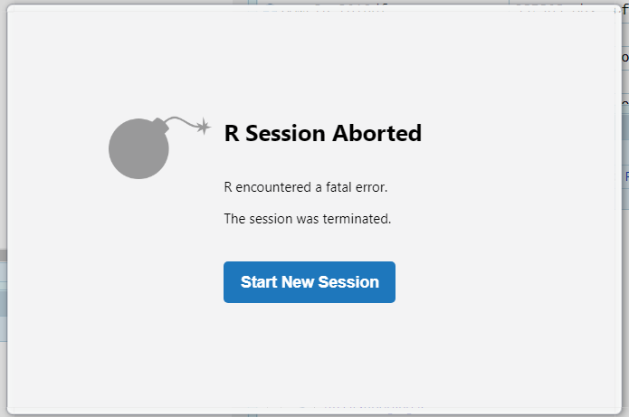
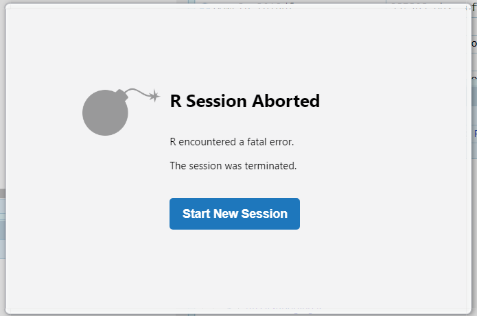

# define a function
foo <- function(){ return(sum(1:1e6)) }
# measure execution of the function, once
# user: actual CPU time for the process
# system: any indirect operation due to the process: I/O of files, GC, memory allocation, ...
# elapsed: total elapsed time
system.time({ foo() }) user system elapsed
0.000 0.000 0.001 # repeat 50 times the function to get some statistics
microbenchmark::microbenchmark({ foo() }, times = 50)Unit: nanoseconds
expr min lq mean median uq max neval
{ foo() } 164 164 13479.98 205 205 663831 50